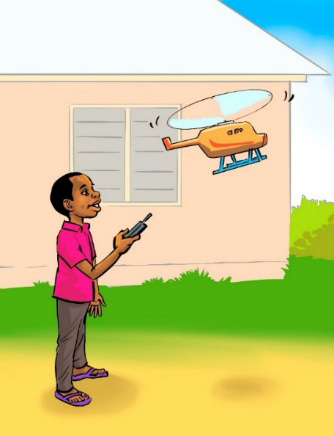

aina ya helikopta. Akafurahi sana na kuchukua shajara yake na kalamu, kisha akaanza kuorodhesha mahitaji yake. Mahitaji hayo ni: karatasi ngumu, plastiki nyepesi, gundi, rula, mkasi, wembe na mota ndogo ya umeme. Baada ya kuviorodhesha, Kongonyoa akaenda kuwaomba wazazi wake wamnunulie vifaa hivyo. Wazazi wake wakakubali ombi lake. Wakamwahidi kuwa watakwenda naye kununua vifaa hivyo siku ya Jumamosi ili yeye mwenyewe achague vifaa sahihi.
Kwa kuwa siku hazigandi, hatimaye, siku ya Jumamosi ikawadia. Kongonyoa akajikuta ameamka mapema na kufanya usafi wa mazingira. Kisha, akaenda kufagia banda la kuku na kuwapa chakula na maji. Akahakikisha pia ameoga mapema na kujiandaa kwa ajili ya safari. Baada ya kupata kifunguakinywa, baba yake akamwita Kongonyoa waende mjini. Mara kwa mara, Kongonyoa huchagua vitu kwa uangalifu sana anapofika dukani. Kama kawaida yake, Kongonyoa akawa mwangalifu sana kuchagua vifaa vya kutengenezea helikopta yake. Wakazunguka kwenye maduka mengi mpaka akapata vifaa vyenye ubora. Wakanunua na kurudi nyumbani.
Baada ya kufika nyumbani, Kongonyoa akaanza kuwaza jinsi ya kupata maarifa zaidi kuhusu kuunda helikopta. Akaamua kuwaomba wazazi wake wamwongoze kusoma kwenye mtandao kuhusu jinsi ya kutengeneza helikopta. Wazazi wake wakamwongoza na kumsimamia kutumia kompyuta kila alipohitaji kujisomea kwenye mtandao. Baada ya kusoma kwa muda wa majuma mawili, Kongonyoa akaanza kutengeneza helikopta yake. Ndani ya siku tatu tu, tayari helikopta yake ikawa imekamilika. Akaenda kuijaribisha uwanjani. Iliweza kupaa juu na kutua chini salama. Kongonyoa alifurahi sana. Akasubiri siku ya mashindano.
